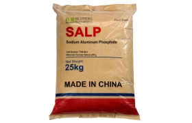

التفاعل المحكوم
يدعم إطلاق ثاني أكسيد الكربون المتأخر مقارنةً بالأحماض الخميرية سريعة المفعول.
حمض الرفع · INS 541(i) · SALP
فوسفات الألومنيوم الصوديوم (SALP) هو فوسفات مخمِّر حمضي وبطيء المفعول يُستخدم مع بيكربونات الصوديوم في البيكنج باودر، والمخبوزات وأنظمة العجين المقلي. توفر Bespring مسحوقًا أبيض بدرجة غذائية للمشترين الصناعيين.
*تتوافق الصيغة مع المواصفات المتوفرة بنسبة 15-16% من فقدان الإشعال. قم بتضمين الكمية والوجهة والتطبيق لإجراء مراجعة فعالة.

نظرة عامة على المنتج
فوسفات الألومنيوم الصوديومي الغذائي هو فوسفات صوديوم-ألومنيوم حمضي وحمض تخمير بطيء المفعول. في أنظمة الخبز، يتفاعل مع بيكربونات الصوديوم لإطلاق ثاني أكسيد الكربون، مما يساعد العجائن والخليط على التوسع أثناء المعالجة والتسخين.
تم التعرف على SALP على أنه INS 541(i). يمكن تمثيل SALP التجاري بأكثر من تركيب كيميائي واحد؛ الصيغة الموضحة في هذه الصفحة تتطابق مع المواصفات الموردة مع فقدان بنسبة 15–16% عند الاشتعال. يجب على المشترين التأكد من الصيغة، ونمط التفاعل، وطرق الاختبار، ومتطلبات سوق الوجهة قبل إبرام العقد.
قيمة الصياغة
يوفر SALP الحموضة المتحكم بها لتخمير البيكربونات. الأداء الفعلي يعتمد على القيمة المعادلة، خصائص الجسيمات، الصيغة الكاملة، الخلط، الرطوبة، درجة الحرارة ومدة العملية.
يدعم إطلاق ثاني أكسيد الكربون المتأخر مقارنةً بالأحماض الخميرية سريعة المفعول.
يساهم في تفاعل الحمض مع البيكربونات والتوسع في أنظمة العجين والخليط المعتمدة.
يساعد المصنعين في إدارة بنية الخلية واتساق المنتج النهائي من خلال التخمير المنضبط.
مفيد حيث يجب أن تتوافق خصائص التخمر مع الخلط أو الاحتفاظ أو التشكيل أو المعالجة الحرارية.
المجالات النموذجية للتطبيق
يجب مراجعة فئة الطعام المقصودة والجرعة والإعلان وفقًا للوائح أسواق التصنيع والوجهة.
يستخدم SALP كمكون حمضي في أنظمة التخمير الكيميائي المحددة للخبز التجاري والخليط الجاف.
في التركيبات المثبتة، تساعد SALP البطيئة المفعول على تنسيق إطلاق الغاز مع ظروف التشكيل والقلي.
مواصفات المنتج
يتم تكرار الحدود التالية من ورقة بيانات المنتج الموردة. وهي للتقييم المرجعي للمنتج؛ المواصفة المتفق عليها وشهادة تحليل الدفعة تحكمان الطلب.
| عنصر الاختبار | المواصفة | تعبير |
|---|---|---|
| اختبار SALP (Na3أل2H15(ص4)8) | ≥ 95.0% | المواصفة المقدمة |
| زرنيخ (As) | ≤ 0.0005% | ≤ 5 ملغ/كغ |
| المعادن الثقيلة (كمقدار Pb) | ≤ 0.001% | ≤ 10 ملغ/كغ |
| الرصاص (Pb) | ≤ 0.0002% | ≤ 2 ملغ/كغ |
| الأس الهيدروجيني (معلقة 1%) | 2–3 | حمضي |
| الفقد عند الاشتعال | 15–16% | تأكيد الطريقة على المواصفات |
| المظهر | مسحوق أبيض | بصري |
إشعار ورقة البيانات: قد تختلف النتائج بسبب اختلاف ظروف الاختبار والمعدات والأساليب. يجب تأكيد الأساليب وقواعد أخذ العينات ومعايير القبول قبل التعاقد.
التعبئة واللوجستيات
تعطي الورقة المزودة حمولة مرجعية قدرها 24 طن متري لكل حاوية بطول 20 قدمًا. التحميل النهائي يعتمد على المسار وحدود الحاوية والمنصات والمتطلبات المحلية.
التخزين وعمر الرف
أسئلة المشتري
حمض SALP هو حمض مخمر بطيء المفعول يُستخدم مع بيكربونات الصوديوم في مسحوق الخبز، والمخبوزات، وتركيبات العجين المقلي. تعتمد الكمية الدقيقة على قيمة المعادلة، والوصفة الكاملة، والعملية، واللوائح المحلية.
فوسفات الألومنيوم الصوديومي الحمضي يتم التعرف عليه بواسطة رقم Codex INS 541(i). يمكن أن تختلف الأسماء الخاصة بالسوق، والملصقات، والتطبيقات المسموح بها، لذا يجب على المشتري التحقق من متطلبات سوق الوجهة.
لا. تعرض هذه الصفحة الحدود المرجعية المقدمة. تقرير شهادة التحليل يعرض النتائج لدُفعة معينة ويجب التحقق منه مقابل مواصفة الشراء المتفق عليها.
تنص المواصفة التجارية الموردة على 25 كجم لكل كيس وحمل مرجعي يبلغ 24 طن متري لكل حاوية بطول 20 قدمًا. يعتمد التحميل النهائي على الطريق وحدود الحاوية ومتطلبات المنصات.
قدم المعيار الغذائي المطلوب، الكمية، التغليف، ميناء الوجهة، تطبيق الخبز أو العجين المقلي، نظام التخمير الحالي وتاريخ التسليم المستهدف.
اسأل فريق المبيعات عن المواصفة، TDS، SDS والمستندات الحالية المتعلقة بـ HACCP أو كوشير أو حلال أو ISO ذات الصلة بالإمداد. أذكر تطبيقك والوجهة بحيث يمكن مراجعة نطاق الشهادة، صلاحيتها وتوافر العينات.
بدء محادثة توريد
شارك التفاصيل التجارية والصيغية التي تؤثر على تأكيد الدرجة، تحميل الحاويات وتكلفة الوصول.